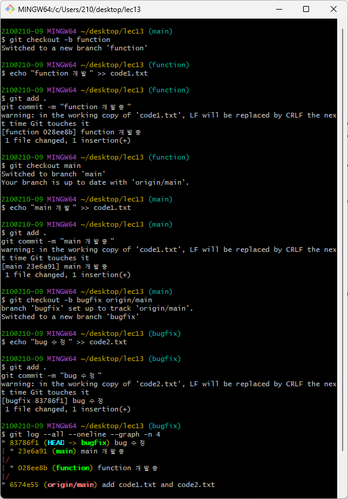
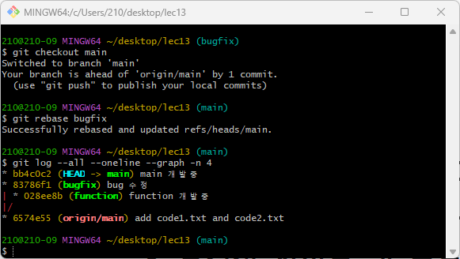
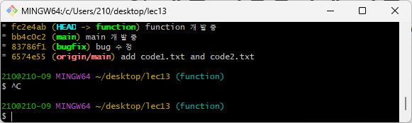
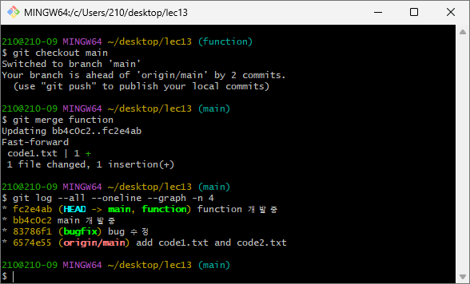
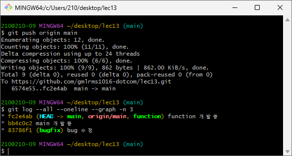
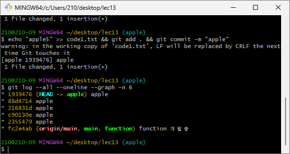
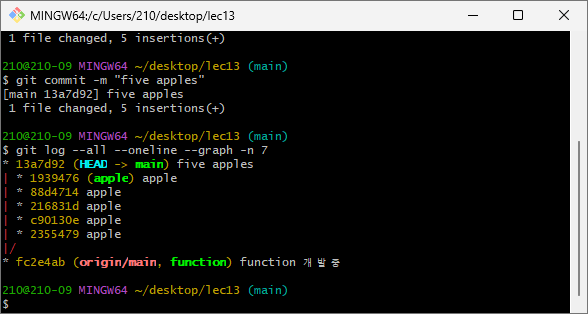
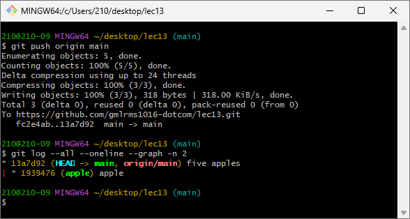

SW개발도구활용 · 기말 완전정리
시험범위 : 13주차 Git — 버전관리 흐름 · 명령어 · 브랜치/병합/리베이스 · 실습 1~4
🧰 이 과목 기말의 핵심은 Git입니다. 아래에서 Git의 4영역 흐름을 그림으로 잡고,
명령어 레퍼런스와 실습 1~4 시나리오를 따라가며, merge·rebase·squash·PR의 차이를 정리하세요.
맨 아래 퀴즈로 점검할 수 있습니다.
📦 Git 소스 관리 기본 흐름13주 · 핵심
작업 디렉토리 → 스테이징 영역(Index) → 지역(로컬) 저장소 → 원격 저장소 4단계로 흐릅니다. 각 단계 사이를 옮기는 명령어를 외우는 게 핵심이에요.
| 흐름 | 명령어 | 설명 |
|---|---|---|
| 작업 → 스테이징 | git add | 변경 파일을 커밋 후보(Index)에 올림 |
| 스테이징 → 지역 | git commit -m | 올린 변경을 하나의 커밋으로 저장 |
| 지역 → 원격 | git push | 로컬 커밋을 GitHub에 업로드 |
| 원격 → 지역 | git pull | 원격 변경을 가져와 병합 |
| 원격 → 새 로컬 | git clone | 원격을 통째로 복제해 새 저장소 생성 |
⌨️ 명령어 레퍼런스 (오늘 쓴 명령어 전체)암기
① 시작 · 상태 확인
| 명령어 | 설명 |
|---|---|
git init | 현재 폴더를 Git 로컬 저장소로 초기화 (.git 폴더 생성) |
rm -rf .git | .git을 강제 삭제해 이력 초기화 — 처음부터 다시 시작할 때 |
git status | 수정/추가/삭제된 파일 등 현재 변경 상태 확인 |
git log --all --oneline --graph -n 4 | 모든 브랜치 커밋 이력을 그래프로 최근 4개 표시 |
ls -a / cd ~/Desktop/lec13 | 숨김파일(.git)까지 목록 / 해당 폴더로 이동 |
② 스테이징 · 커밋
| 명령어 | 설명 |
|---|---|
git add . | 모든 변경 파일을 스테이징 |
git add code1.txt | 특정 파일만 스테이징 |
git commit -m "메시지" | 스테이징된 변경을 하나의 커밋으로 저장 |
echo "내용" >> 파일.txt | 파일 끝에 내용 추가(append) — 없으면 새로 생성 |
③ 원격 저장소
| 명령어 | 설명 |
|---|---|
git remote add origin <url> | origin 이름으로 원격 URL 연결 |
git remote set-url origin <url> | 이미 연결된 origin의 URL 변경 (add가 오류날 때) |
git remote -v | 연결된 원격의 이름과 URL 확인 |
git clone <url> | 원격을 복제해 새 로컬 저장소 생성 |
git push -u origin main | 로컬 main을 처음 올릴 때 — -u로 추적관계 설정 |
git push origin main / bug | 해당 브랜치 커밋을 원격에 업로드 |
git pull origin main | 원격 main 변경을 가져와 로컬에 병합 |
④ 브랜치 · 전환
| 명령어 | 설명 |
|---|---|
git branch -a | 로컬·원격 모든 브랜치 목록 (현재 브랜치는 *) |
git checkout main | main 브랜치로 전환 |
git checkout -b bug | bug 브랜치를 새로 만들고 즉시 전환 |
git checkout -b bugfix origin/main | origin/main을 기준으로 bugfix 생성·전환 |
git checkout function | 이미 있는 function 브랜치로 전환 |
⑤ 병합 · 리베이스
| 명령어 | 설명 |
|---|---|
git merge function | function을 현재 브랜치에 병합 (일직선이면 fast-forward) |
git merge --squash apple | apple의 여러 커밋을 하나로 압축해 병합 준비 — 별도 commit 필요 |
git rebase main | 현재 브랜치 시작점을 main 끝으로 옮겨 선형 이력 생성 |
git rebase --continue / --abort | 충돌 해결 후 계속 진행 / 중단하고 이전 상태로 복귀 |
🧪 실습 1~4 시나리오실습
실제 시험에서 “순서대로 명령어를 쓰라”고 나올 수 있는 핵심 흐름입니다. 펼쳐서 단계별로 확인하세요.
실습 1 — Pull Request로 병합하기 (개발자 협업)
bug 브랜치에 code1.txt를 추가하고, GitHub Pull Request로 main에 병합.
git clone https://github.com/rawonDY/TeamProject.git
cd TeamProject
git checkout -b bug # bug 브랜치 생성·전환
# (code1.txt 작성)
git add code1.txt
git commit -m "code1.txt 파일에 내용 추가"
git push origin bug # bug 브랜치 업로드
# GitHub 웹: Pull Request 생성 (base: main ← compare: bug)
# 코드리뷰 후 Merge → "개발 내용 확인, 이상 없음"
git checkout main
git pull origin main # 병합 결과 로컬에 반영
git log --all --oneline --graph실습 2 — 로컬 PC 소스코드를 원격 저장소로 업로드
cd ~/Desktop/lec13
git init # 로컬 저장소 초기화
git add .
git commit -m "add code1.txt and code2.txt"
git remote add origin https://github.com/gmlrms1016-dotcom/lec13.git
git push -u origin main # 처음 업로드 + 추적관계 설정🖥️ 실제 실행 로그 (내 Git Bash 캡처)

init → add → commit → remote add → push -u 전 과정. Initialized empty Git repository → 커밋 6574e55 → [new branch] main -> main 으로 첫 업로드 성공.실습 3 — 개발 브랜치 + Rebase (선형 이력 만들기)
function·main·bugfix 세 브랜치를 만들고, rebase로 한 줄(선형)로 정리한 뒤 fast-forward merge.
(1) 브랜치 3개 생성·커밋
git checkout -b function
echo "function 개발" >> code1.txt
git add . && git commit -m "function 개발중"
git checkout main
echo "main 개발" >> code1.txt
git add . && git commit -m "main 개발중"
git checkout -b bugfix origin/main
echo "bug 수정" >> code2.txt
git add . && git commit -m "bug 수정"
(2) main에 bugfix를 rebase → 선형
git checkout main
git rebase bugfix
(3) function을 main 위로 rebase (충돌 시 수정→git add .→git rebase --continue)
git checkout function
git rebase main
(4) main에 function merge → fast-forward
git checkout main
git merge function
git push origin main🖥️ 실제 실행 로그 — 단계별
git log --all --oneline --graph (내 Git Bash 캡처)
83786f1(bugfix)·23e6a91(main)·028ee8b(function) 가 6574e55(origin/main)에서 세 갈래로 분기.
git rebase bugfix → Successfully rebased. bb4c0c2(main)이 83786f1(bugfix) 위로 올라감(function은 아직 분기).
git rebase main → fc2e4ab(function)·bb4c0c2(main)·83786f1(bugfix) 가 완전한 한 줄(선형)로 정렬.
git merge function → Fast-forward! fc2e4ab를 HEAD -> main, function 둘이 함께 가리킴(병합커밋 없음).
git push origin main → origin/main도 fc2e4ab로 최신화. (HEAD -> main, origin/main, function)→ rebase로 분기를 선형으로 펴니, 마지막 병합이 새 커밋 없이 fast-forward로 끝남. (커밋 해시는 내 실제 실행값)
실습 4 — Squash Merge (커밋 5개 → 1개로 압축)
(1) apple 브랜치에 커밋 5개
git checkout -b apple
echo "apple1" >> code1.txt && git add . && git commit -m "apple"
echo "apple2" >> code1.txt && git add . && git commit -m "apple"
# ... apple3, apple4, apple5 동일
(2) main에서 squash merge → 하나로 합쳐 새 커밋
git checkout main
git merge --squash apple
git commit -m "five apples" # 5개가 1개 커밋으로
(3) 원격에 push
git push origin main🖥️ 실제 실행 로그 — squash 전·후
git log --all --oneline --graph (내 Git Bash 캡처)
apple에 커밋 5개 (-n 6) → 1939476(HEAD->apple) 등 “apple” 커밋 5개가 fc2e4ab(main) 위에 쌓임.
merge --squash + commit "five apples" (-n 7) → main엔 13a7d92 five apples 한 커밋, apple 5개는 옆 갈래로 그대로.
git push origin main (-n 2) → 13a7d92 (HEAD -> main, origin/main) five apples 로 깔끔하게 한 줄 완료.→ squash로 자잘한
apple 커밋 5개가 “five apples” 한 커밋(13a7d92)으로 합쳐짐. (커밋 해시는 내 실제 실행값)🔑 핵심 개념 — merge · rebase · squash · PR비교
| 개념 | 한 줄 정리 |
|---|---|
| fast-forward merge | 브랜치가 일직선상에 있을 때 포인터만 앞으로 이동하는 병합 (새 커밋 안 생김) |
| merge | 다른 브랜치를 현재 브랜치에 합침. 갈래가 있으면 병합 커밋이 생기고 이력이 보존됨 |
| rebase | 브랜치의 기반(base)을 다른 커밋으로 옮겨 선형 이력 생성 (깔끔하지만 이력을 재작성) |
| merge --squash | 여러 커밋을 하나의 커밋으로 압축해 병합 (별도 commit 필요) |
| Pull Request(PR) | 원격에서 브랜치 병합을 요청 + 코드리뷰를 진행하는 GitHub 협업 기능 |
🧠 rebase vs merge : 둘 다 합치지만 — merge는 갈래를 남기고(이력 보존), rebase는 한 줄로 펴서(이력 깔끔) 만든다. squash는 “여러 커밋 → 1개”.
📝 퀴즈 — 객관식 + 괄호채우기점검
객관식 — 보기를 클릭하면 정답·해설이 보여요
1작업 디렉토리의 변경 파일을 스테이징 영역에 올리는 명령어는?
정답 B — 작업→스테이징은
git add. 스테이징→지역은 git commit.2원격 저장소를 복제해 새 로컬 저장소를 만드는 명령어는?
정답 C —
git clone <url>. git pull은 기존 저장소에 변경을 가져와 병합.3여러 커밋을 하나의 커밋으로 압축해 병합하는 것은?
정답 A —
merge --squash 후 git commit으로 하나의 커밋이 됨.4브랜치의 기반(base)을 옮겨 선형 이력을 만드는 명령어는?
정답 D —
git rebase는 이력을 한 줄로 펴 줌(재작성).5새 브랜치를 만들면서 동시에 전환하는 명령어는?
정답 B —
-b가 “생성+전환”. git checkout bug는 이미 있는 브랜치로만 전환.6로컬 main을 원격에 처음 올리며 추적관계를 설정하는 명령은?
정답 C —
-u(=--set-upstream)로 이후엔 git push만 쳐도 됨.괄호채우기 — 빈칸을 채우고 ‘확인’ (띄어쓰기·대소문자 무시)
괄호 1 현재 폴더를 새 Git 로컬 저장소로 초기화하는 명령어는? (
.git 생성)괄호 2 수정/추가/삭제된 파일 등 현재 변경 상태를 확인하는 명령어는?
괄호 3 커밋 이력을 그래프로 보려면?
git log --all --oneline ____괄호 4 원격 저장소를 origin 이름으로 연결:
git remote ____ origin <url>괄호 5 원격 저장소의 변경사항을 가져와 로컬에 병합하는 명령어는?
괄호 6 Git 4영역 중
add와 commit 사이, 커밋 후보를 모아두는 영역은? (=Index)괄호 7 원격에서 브랜치 병합을 요청하고 코드리뷰를 진행하는 GitHub 기능은?